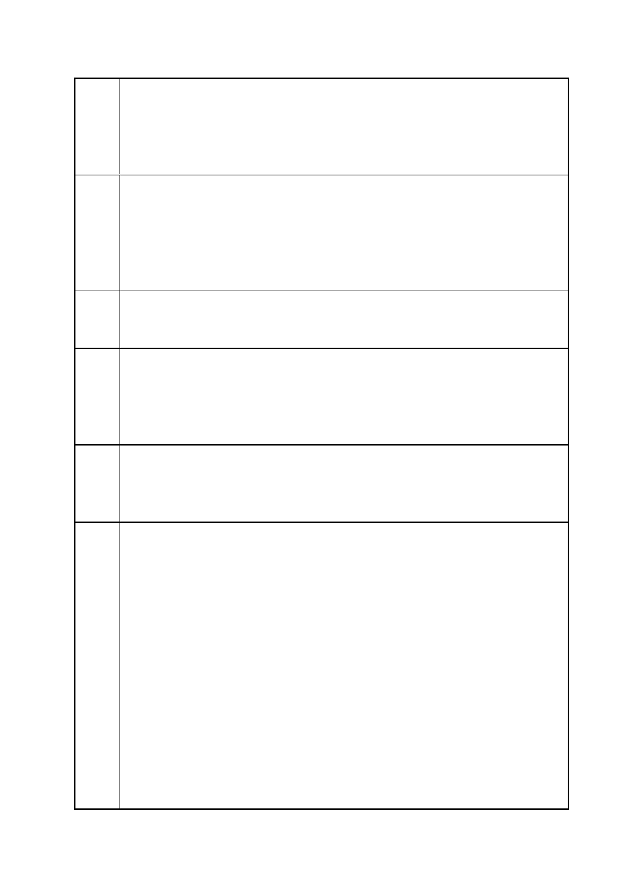

臺北市都市計畫委員會 公民或團體陳情意見綜理表
案
名
一
建議
辦法
一
陳情
理由
二
建議
辦法
二
陳情
理由
三
「變更臺北市信義區逸仙段二小段 33 地號等 21 筆土地（原臺北機廠）
工業區為創意文化專用區、特定專用區、道路及綠地用地主要計畫案」
及「擬定臺北市信義區逸仙段二小段 33 地號等 21 筆土地（原臺北機
廠）創意文化專用區、特定專用區、道路及綠地用地細部計畫暨劃定
都市更新地區計畫案」
劃設配置在目前已指定之市定古蹟、歷史建築等文化資產所佔基地，
並同時變更為保存區，並指定為鐵道博物館專用為主、博物館相關設
施為輔的公益空間。現階段的區劃方式，不僅排除了總辦公室、客車
工場，南北移（吊）車台於主要區域之外，更使柴電工場之一部劃為
道路用地，並且將古蹟的澡堂與組立工廠分割為兩區，未來在土地利
用與建築規劃上恐有難以統整之虞。
將原「創意文化區」、「特四」應改劃為「保存區」，並以鐵道文化保
存與鐵道博物展示為主進行相關規劃。
2.形成公共空間連貫軸帶
對於台北機廠欲往南聯繫松菸園區、大巨蛋、乃至於國父紀念館等
區，應於本園區劃設全日貫通型的開放空間或綠帶，並於此線性公共
空間周邊留設停留型的廣場空間，以誘導、疏散、促進各園區間的無
碳交通的遂行，並觸發市民與開放空間的活動關係。
目前採取的數個廣場型態開放空間，位置過於分散，建議應加強集中
劃設到中央軸帶周邊(即「細部計畫書」中第 28 頁之”公共開放空間
系統圖”所示藍色雙箭頭虛線)。同時加強並與南側「廣場」及「綠」
適度連結，目前僅有 5 米退縮綠帶稍嫌薄弱。
3.確立保存並籌設鐵道博物館優先
對於台北市立美術館需要分館預定地一事，吾人認為不應設於此地為
宜。原因如下:
a.在鐵道文化資產如此密集配佈的區域，應以規劃為鐵道與交通相關
博物館為宜，如此獲致最好的文化資產保存與博物展示效應。鐵道文
物也不應只是鐵軌、廠房建築的外殼而已，關於列車與本廠相關的機
械設備，皆應妥為規劃原地展示保存。國外已有相關精彩案例。如英
國的約克、荷蘭、日本、澳洲.....等，皆以現役工廠為鐵道博物館之
展示重點。
b.國外固然有廢棄工業廠區改建為美術館的先例，但仔細考察其經
驗，仍都在以保存現有工業遺產的前提下進行，而非與既有的工業遺
產爭奪使用空間。
c.從國外的美術館設立分館的經驗來看，的確是一種創造窳劣地區都
市再生的良善方式。然而，本區雖是工業區欲進行都市再生，但周邊
並非都市窳劣地區，反而因為京華城、松菸等鄰近園區，早成為蓬勃
第 80 頁/共 154 頁